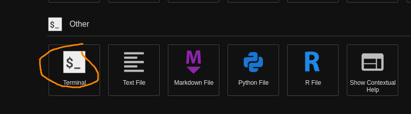

Installation
Downloadable resources/data
Click here to download the shell-lesson-data for the exercises throughout understanding the Shell.
JupyterHub
- Navigate to JupyterHub
- an online environment where you can code and explore the Shell. >>
- Login to JupyterHub using your CCCU user account credentials. >>
- Start your server...
>>
 >>
>> - Once server has started Right Click File Browser view and create a new folder called
FCC>> - Double Click
FCCand select the upload files icon to upload theshell-lesson-data.zip. Alternatively you can drag theshell-lesson-data.zipfrom your host machine to the file browser in jupyter hub to upload it. >> - Next select from the
Launcherwindow the 'Terminal' icon to load a terminal. >>  >> - Now you can navigate to the correct directory using the following commands, note we will be going over what these mean at a later date.
cd FCC
You should see something like this on your terminal... >>unzip shell-lesson-data.zip && rm shell-lesson-data.zip >>
>> - Ok good job, you are ready for lab exercises.